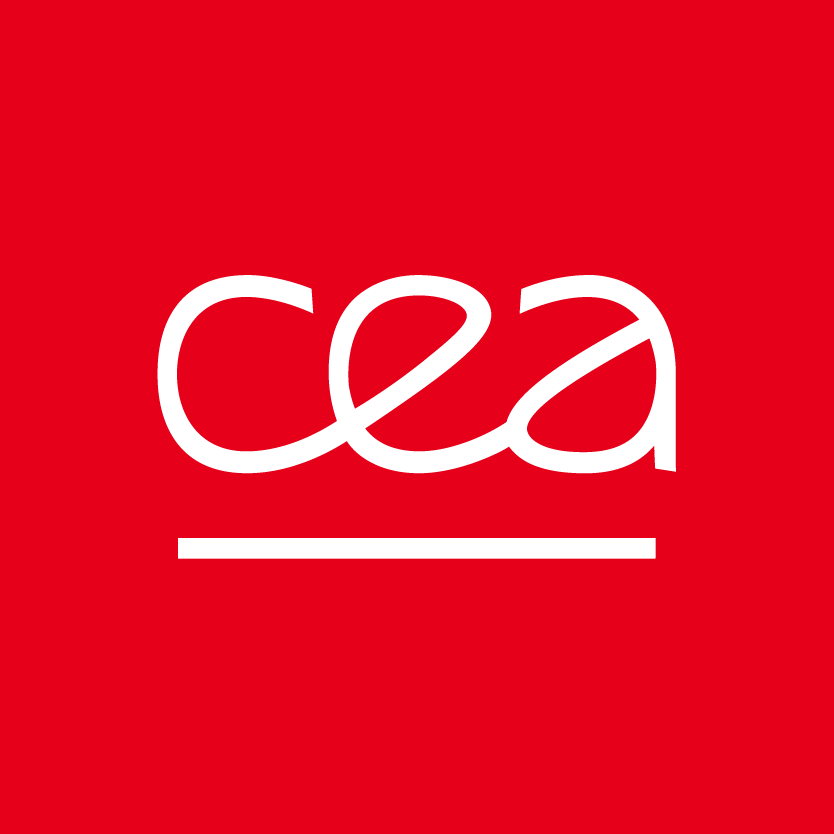
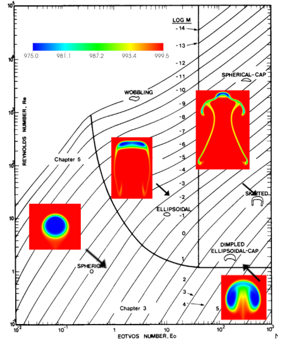
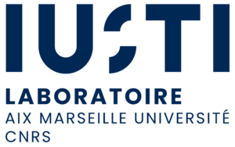
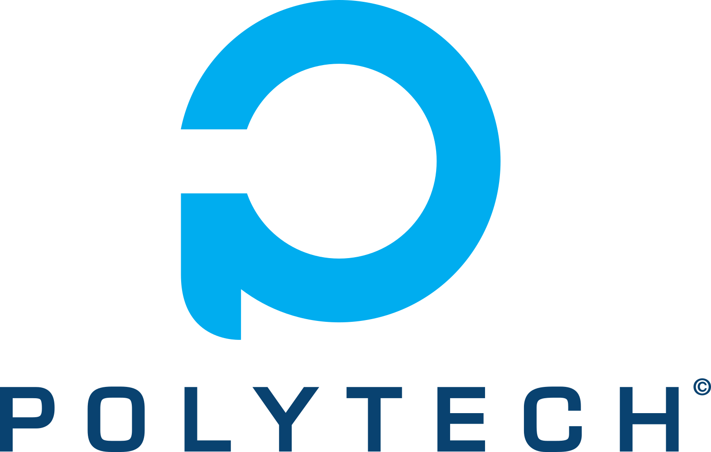
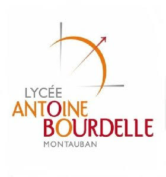

À propos
Ingénieur simulation numérique, soutenance de thèse le 16 décembre 2026. Disponible immédiatement et mobile géographiquement. Mes travaux de thèse portent sur la modélisation et la simulation de problèmes couplés, avec une composante importante sur la prise en compte de données thermodynamiques complexes : gain d'un facteur 100 sur le temps de calcul pour une erreur relative de 10⁻⁵, obtenu en comparant différents métamodèles (interpolation sur grille adaptative en dimension arbitraire (> à 3), compression tensorielle, réseaux de neurones).
Expérience

Thèse de doctorat
Commissariat à l’énergie atomique et aux énergies alternatives (CEA) · Cadarache
Sujet : « Simulation de la diffusion anisotherme diphasique dans des oxydes non
stœchiométriques : modélisation par une méthode de champ de phase et fermetures thermodynamiques
CALPHAD »
- Simulation du couplage entre transfert thermique, diffusion d’espèces multicomposant et changement de phase solide-liquide
- Développement et analyse d’un modèle de champ de phase
- Développement de modèles de substitution pour intégrer les données thermodynamiques dans les simulations : compression et complétion tensorielles, tabulation et interpolation sur grilles adaptatives en dimension arbitraire, réseaux de neurones
- Optimisation des temps de calcul : gain d’un facteur supérieur à 100 sur le temps lié à la thermodynamique et supérieur à 10 sur le temps de calcul total
Stage de fin d’études
Commissariat à l’énergie atomique et aux énergies alternatives (CEA) · Cadarache
Simulation CFD diphasique d’une goutte soumise à du transfert de masse
multicomposant
- Modélisation CFD diphasique par méthode de champ de phase multicomposant et étude de sensibilité aux paysages thermodynamiques
- Reproduction qualitative du diagramme de Clift (régimes de déformation d’une goutte)
- Simulations d’instabilités de Rayleigh–Taylor induites par transfert de masse interfacial
- Valorisation des résultats : intégration d'une partie des travaux dans le manuscrit de thèse de M.A. Rasolofomanana : theses.fr/2023IPPAX141


Stage de master 1
Institut Universitaire des Systèmes Thermiques Industriels (IUSTI) UMR 7343 ·
Marseille
Stage en laboratoire universitaire
- Implémentation et amélioration d’un modèle de thermorégulation 1D instationnaire issu de la littérature, sous Octave/MATLAB
Formation

Diplôme d’ingénieur — Mécanique Énergétique
Polytech Marseille
Parcours simulation avancée en mécanique des fluides et thermique
- Mécanique des fluides (théorique et numérique) : fluides visqueux et parfaits, turbulence
- Transferts thermiques : conduction, convection et rayonnement
- Programmation scientifique et simulation : méthodes numériques, MATLAB, Fortran 90, C++
Échange Erasmus
Linköping University (LiU) · Linköping (Suède)
- Échange non diplômant d’un semestre, cours dispensés en anglais
- Cours : aérodynamique, turbines à gaz (turbomachines, thermodynamique, mécanique des fluides), mécanique du vol, mécanique des milieux continus

Classe préparatoire aux grandes écoles (CPGE) — Physique et Technologie (PTSI/PT)
Lycée Antoine Bourdelle · Montauban
- Enseignement général en mathématiques, physique-chimie et sciences industrielles de l’ingénieur (SII)
Compétences
- Simulation numérique
- Modèles de substitution
- Programmation
- Outils
- Langues
- Français (natif) · anglais (professionnel)
Projets personnels
Résolution des équations d’Euler compressibles
Code écrit avec le framework AMReX
- Utilisation de la bibliothèque AMReX pour la gestion du parallélisme (sans raffinement adaptatif)
- Schéma numérique : MUSCL avec limiteur de pente, flux HLLC, RK3-SSP
- Validation sur une solution de référence (tube à choc de Sod 1D)
- Simulation d’une instabilité de Rayleigh–Taylor